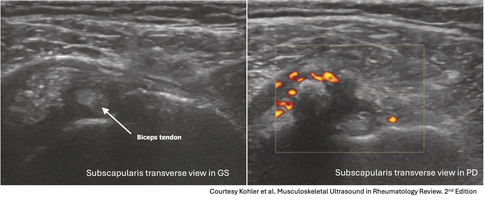
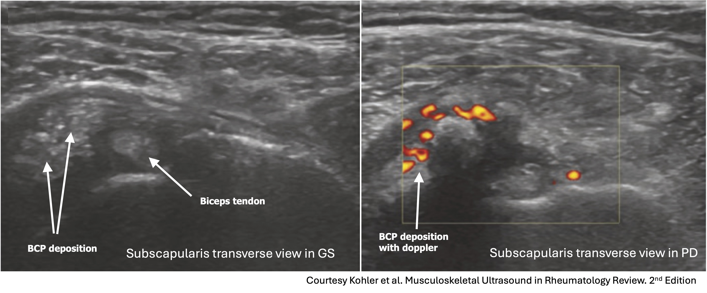

Case 19
Case 19
Case Vignette
A 70-year-old man is referred to the rheumatology clinic with progressive bilateral shoulder pain over the last 6 months. (Expand for full history & exam.)
A 70-year-old man is referred to the rheumatology clinic due to progressive bilateral shoulder pain over the last 6 months.
He has pain and stiffness in the mornings, and it takes him 30 minutes to "get going" and move his shoulders and arms. However, the shoulder pain also worsens with using the shoulders for a period of time and at the end of the day. He has not noticed any swelling, warmth or redness. He is able to move it fully. There is no hip or buttock pain or stiffness, and no other concerning joint symptoms.
His family MD did some bloodwork which showed a CRP of 12 mg/L (N<5 mg/L) and an ESR of 40 mm/hr (N<30 mm/hr). The rest of his bloodwork is unremarkable. X-rays are normal.
On examination, he has full ROM of the shoulders but a painful arc and positive impingement testing. His Speed's test (biceps) is normal. There is no tenderness or swelling at the shoulder.
His brother has PMR. He is otherwise healthy and active. He does not smoke or drink. His family MD was concerned about PMR given the age, family history, bilateral shoulder pain with some inflammatory symptoms, and CRP elevation.
Bedside Ultrasound — Shoulder



The other three findings are all present, so biceps tenosynovitis is the one not seen here.
The subscapularis image shows amorphous basic calcium phosphate (BCP) deposition next to the biceps tendon with Doppler signal. The shoulder rotator cuff tendons are more likely to have BCP deposits than calcium pyrophosphate deposits (CPPD). The morphology of these calcifications can vary from amorphous fluffy collections with poorly defined borders to discrete, homogenous collections with well-described borders. The poorly defined collections may be sonolucent. The discrete collections may appear eggshell-shaped or as hyperechoic punctate areas within the tendon.

The second image shows a very evident SA/SD bursa with proximal distension. Early fluid collections deposit at the most dependent segment of the bursa, distal to the supraspinatus attachment. In cases like this, the sonographer can miss the bursal distension if not intentionally scanning distal to the tendon attachment. When the fluid increases, there is distension expanding more proximal portions, as seen in the image.

The third image shows a supraspinatus tear, which is commonly seen in painful shoulders. The supraspinatus is the most commonly affected by tears. Tendon fibre discontinuity is the most reliable sign of a tendon tear and is best seen in the presence of fluid. The presence of fluid may also give rise to the interface sign. Tears of the supraspinatus are also associated with greater tuberosity (bony) irregularity.

The 2012 EULAR/ACR classification criteria for PMR added ultrasound findings into their scoring algorithm. You could meet their scoring criteria with or without ultrasound. Patients with PMR were more likely to have abnormal ultrasound findings in the shoulder, particularly subdeltoid bursitis, biceps tenosynovitis, and/or glenohumeral synovitis. The criteria require and/or, so not all 3 pathologies are required to get a point.
While classification criteria are for clinical trials, to get a homogenous population for studies, they should not be used strictly for diagnostic purposes given the heterogeneity of the disease. That being said, ultrasound of the shoulders (and hips) can be useful in narrowing down your differential in a condition such as PMR, given the lack of other reliable biomarkers.
If the pre-test probability is moderate or high and you find relevant shoulder pathologies seen in PMR, it could increase your confidence in the diagnosis. Alternatively, if your pre-test probability is low and the ultrasound findings show more rotator cuff tears or calcification, without bursitis, tenosynovitis or synovitis, then it helps lower your suspicion of PMR.
Bedside Ultrasound — Supraspinatus Tendon (Longitudinal)

The image shows a complete supraspinatus tendon tear, with no recognizable fibres and remodelling of the greater tuberosity.

The definitions of tendon tears are in the table below.
| Type of tear | Definition |
|---|---|
| Complete | All the tendon substance is absent (no fibres seen) |
| Full-thickness tear | The tear extends from the bursal surface to the articular surface |
| Partial thickness tear |
Bursal — volume loss on the bursal side of the tendon, often with bursal or deltoid invagination Articular — volume loss at the articular portion of the tendon |
| Rim rent tear | Tear at the footprint of the tendon insertion |
Bedside Ultrasound — Biceps Tendon (Transverse, Doppler)

Given what you recalled about PMR ultrasound findings, you decide to scan the biceps tendon.
The normal circumflex artery often courses beside the biceps tendon and can be mistaken for a sign of pathologic Doppler activity. It is important to recognize this normal finding so as not to erroneously call pathology for normal vessels.

Bedside Ultrasound — Biceps Tendon (Proximal)


Biceps tendonitis and tenosynovitis are common findings in patients with shoulder pain. Tendon swelling, splitting or degeneration of the tendon, tendon sheath synovial hypertrophy, fluid collection in the sheath, and/or the presence of Doppler signal have been established as reliable sonographic elements for the diagnosis of biceps tendonitis.
The biceps sheath communicates with the glenohumeral joint, so the fluid within the sheath of the biceps tendon could be originating and tracking from the GH joint, and that should be checked. Pathology of the biceps tendon is rarely found in isolation and can be considered a harbinger of pathology elsewhere in the cuff or joint, supporting a complete evaluation of the basic shoulder structures.
Biceps tendon sheath fluid and effusions are common findings in asymptomatic patients. Therefore, a more accurate diagnosis of tenosynovitis (pathology) would be established if there was also the presence of tenosynovial tissue hypertrophy or Doppler.
A detailed history and physical examination in combination with the sonographic assessment can help determine if the tendon pathologies are biomechanical or inflammatory in nature. Ultrasound alone should never be used to differentiate, as it is always relevant in the clinical context.